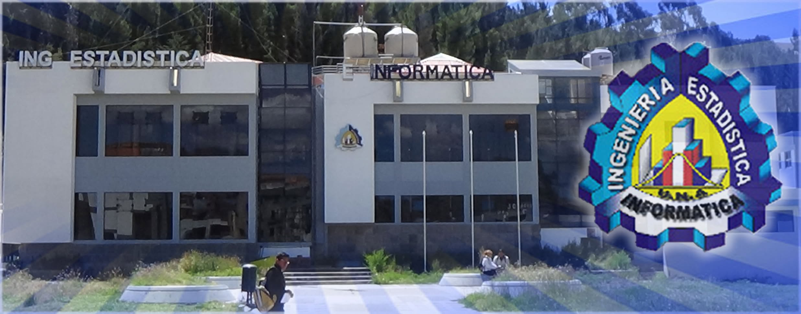

FINESI · Universidad Nacional del Altiplano
Archivo digital de sílabos de los cursos a cargo de la docente Patricia Arhuata M. — consulta, descarga y revisa el detalle de cada curso.
FINESI · UNA — PunoFichero de cursos
Aprendizaje No Supervisado
Clustering, reducción de dimensionalidad y detección de patrones +Técnicas de agrupamiento, análisis de componentes principales y modelos para descubrir estructura en datos sin etiquetar. Incluye competencias, unidades temáticas, metodología y sistema de evaluación.
Arquitectura de Redes
Diseño, protocolos y topologías de infraestructura de red +Fundamentos de redes de datos, modelos de referencia, direccionamiento y diseño de arquitecturas escalables y seguras para entornos institucionales.
Gestión de Proyectos de TICs
Planificación, ejecución y control de proyectos tecnológicos +Metodologías de gestión de proyectos aplicadas al desarrollo de soluciones TIC: alcance, cronograma, costos, riesgos y cierre de proyecto.
Modelos Lineales
Fundamentos estadísticos para la modelación de datos +Formulación, estimación y diagnóstico de modelos lineales generales, base para el análisis estadístico aplicado en las siguientes unidades del curso.
Regresión Lineal y No Lineal
Modelamiento predictivo y análisis de relaciones entre variables +Construcción, validación e interpretación de modelos de regresión lineal y no lineal, con énfasis en su aplicación a problemas reales.
Series de Tiempo
Análisis, pronóstico y modelamiento de datos temporales +Descomposición, estacionariedad y modelos de pronóstico (ARIMA y afines) para el análisis de datos observados a lo largo del tiempo.